In the 3D graphics and CGI industry, integrating "dirty" or low-quality technical assets is a complex, daily challenge. This scenario has been further amplified by the rise of Artificial Intelligence: while AI has boosted and accelerated workflows, it has also exponentially increased the risk of introducing structurally flawed models or artifacts invisible at first glance into the pipeline.
This product was born from this exact market urgency: addressing the concrete need of industry professionals for structured feedback, deep analysis, and actionable solutions to safeguard technical production quality before the final render.

Integrating "dirty" assets and invisible AI-generated anomalies triggers a frustrating loop of endless revisions. This fragmentation creates severe and constant workflow bottlenecks.
Eliminate workflow bottlenecks and redundant checks by providing structured, detailed reports that make every piece of feedback immediately actionable.
UX/UI Lead & Front-End Developer. I led the entire product lifecycle: from user research and interface design to translating it into clean, scalable code.
Field research was conducted by interviewing key stakeholders and distributing online surveys to 3D graphics professionals, startups, and freelancers. Initially, the project was conceived as a simple Dribbble-style feedback portal where users could showcase their work and receive community feedback. However, quantitative and qualitative research uncovered much deeper and more complex needs, perfectly summarized by an interviewed user:
It does me no good to receive delayed and superficial feedback
This fundamental insight radically shifted the product's direction, transforming it from a social showcase into a technical diagnostic and optimization tool for the production pipeline.
Quality isn't a subjective opinion; it's a technical guarantee I must deliver to my clients every single day.
Jennifer is a Creative Director who needs a way to validate the technical quality of her assets and receive structured professional feedback, so she can prevent technical issues, reduce revisions, and keep her workflow efficient.
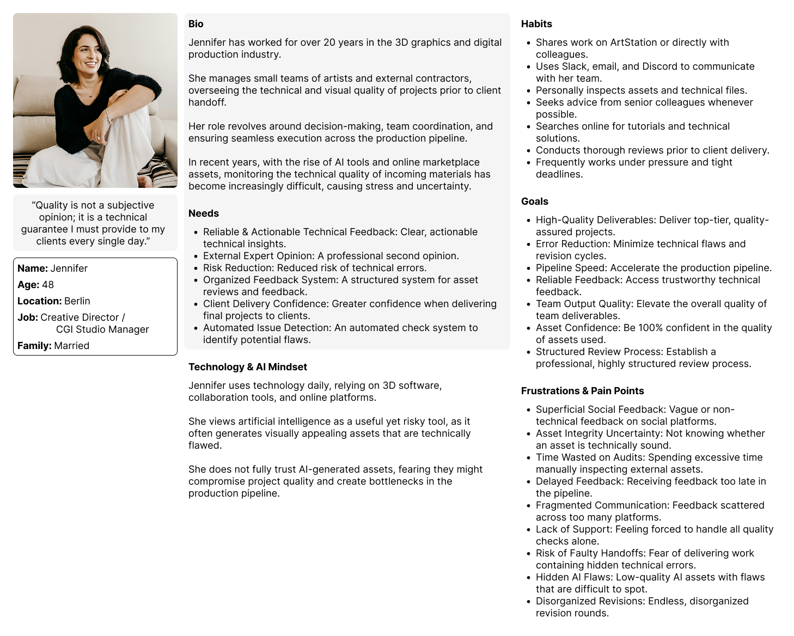
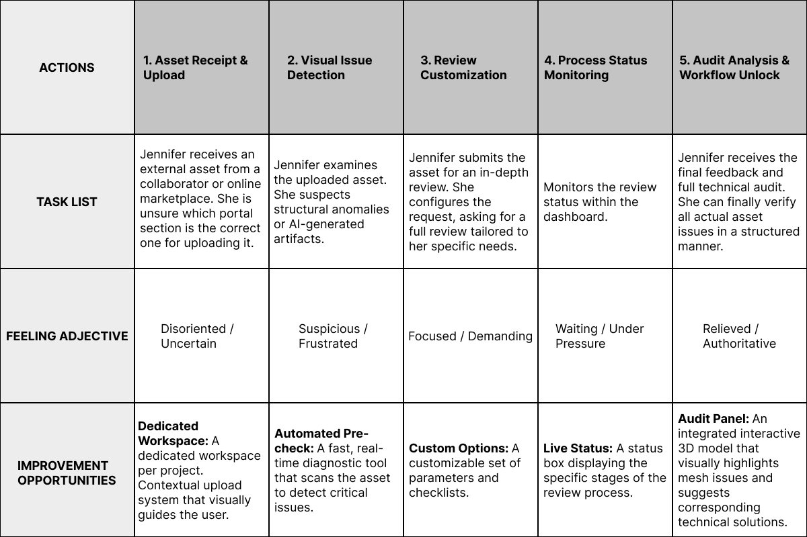
To best analyze Jennifer's workflow and friction points, I chose to structure a Future-State User Journey Map (focused on envisioned products), ideal for solutions still in the design phase.
Mapping a fragmented existing process—reliant on outdated steps like sharing on forums, Discord, or Dribbble for generic opinions—wouldn't have offered actionable design insights. Instead, this future-state model outlines essential steps and touchpoints within our ecosystem, highlighting where and how Jennifer faces critical pain points and how the interface responds to her needs.
The features identified during brainstorming validated the strategic research data, enabling me to structure a solid, coherent value proposition focused on the real needs of professionals.
Analyzing the requirements mapping, the first macro-category stands out: "Instant Workflow Optimization". This highlights the central role of Pre-Check in our ecosystem: catching asset issues immediately before they enter the pipeline is key to eliminating bottlenecks and ensuring a smooth workflow from the start.
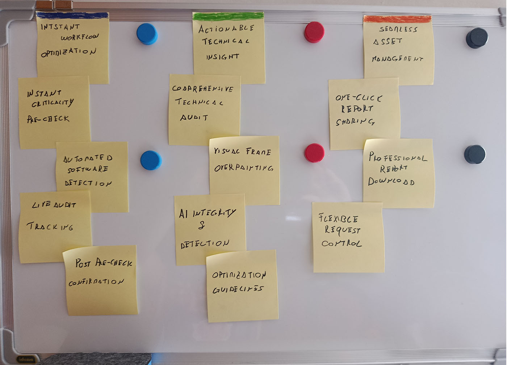
Paper & Digital Wireframes & Usability Testing
These paper wireframes, though low-fidelity, are detailed in structure, outlining the workspace and project view where asset uploading and smart checks occur.
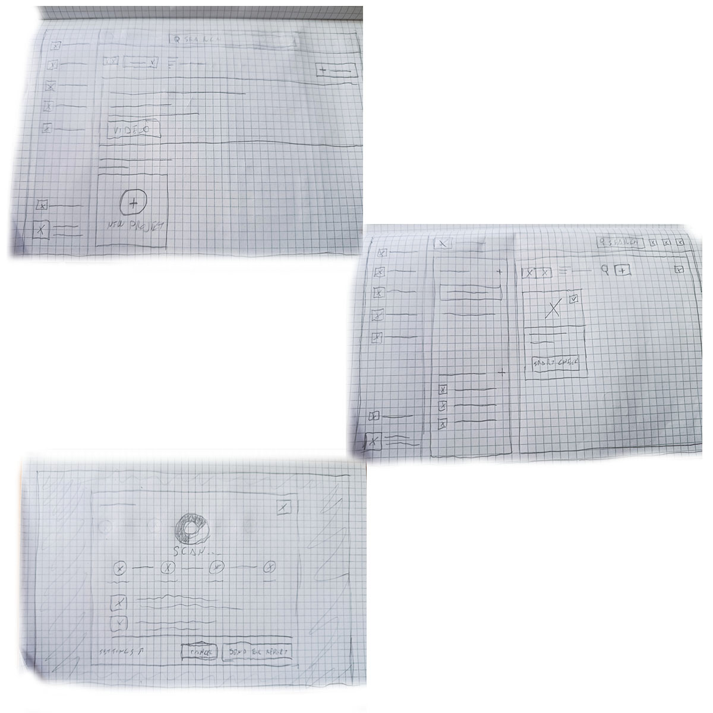
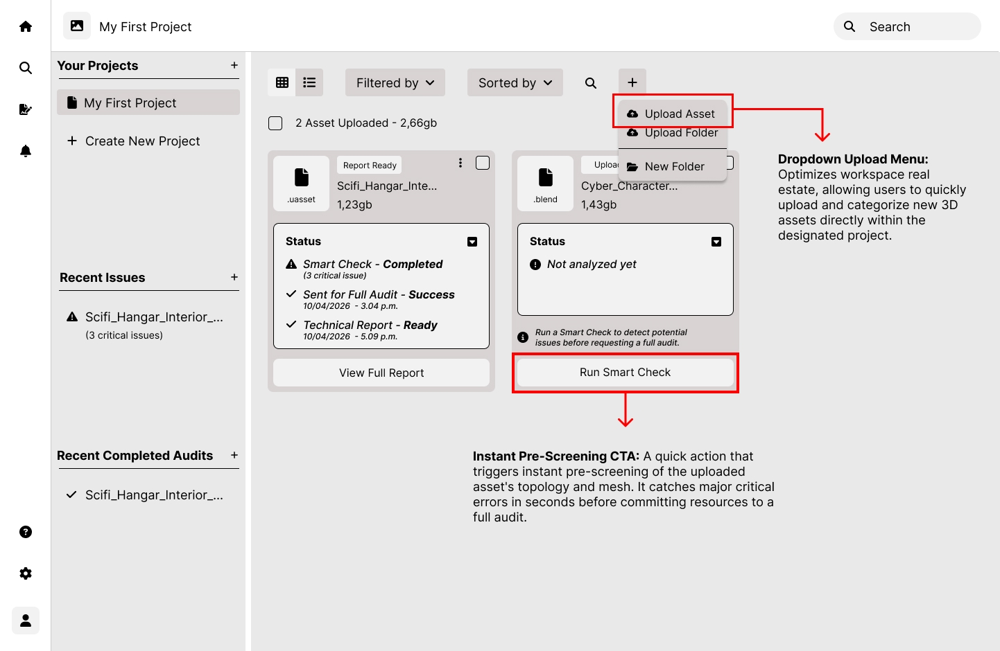
This is the core hub of the user experience. This centralized screen was designed to offer total and immediate workflow control: users can manage asset inventories, upload new files in a few steps, track report progress in real time, and launch the Smart-Check feature for individual files.
To design an intuitive and high-impact tool, I analyzed UX patterns from indirect competitors, specifically antivirus software and diagnostic scanning tools.
By leveraging this familiar mental model, users can instantly decode the Smart-Check status and the severity of detected issues. This visual clarity enables immediate strategic decisions—allowing users to assess at a glance whether the file is safe or requires a comprehensive Full Audit.
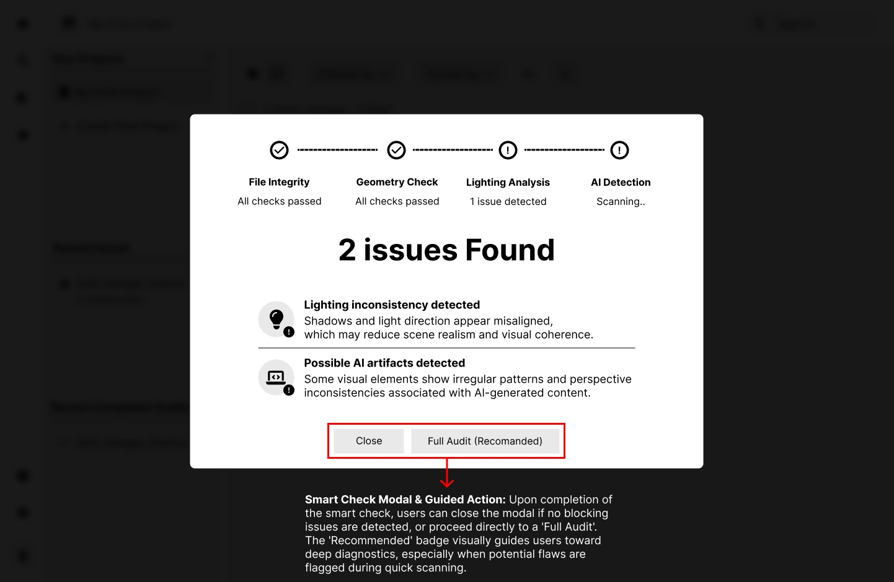
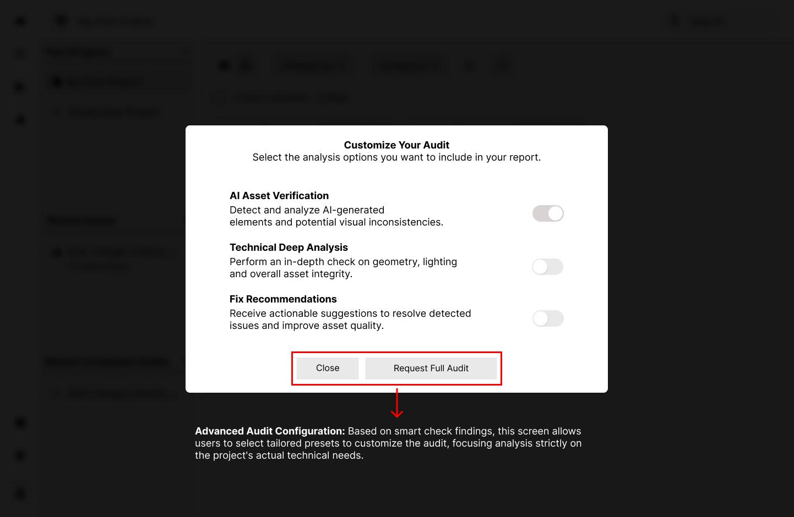
This modal marks the transition point where Smart-Check data turns into action. Designed for maximum flexibility, it allows users to customize the deep audit based on the specific issues detected.
Low-fidelity interactive prototype used to field-test logical flows, information architecture, and navigation ease.
1. Upload: Uploading and inserting a new asset into the project.
2. Rapid Diagnostics: Running Smart-Check on the newly uploaded asset to catch initial feedback and issues.
3. Issue Analysis: Identifying detected technical issues and triggering a Full Audit request.
4. Customization: Tailoring advanced audit parameters and selecting specific options for fix requests.
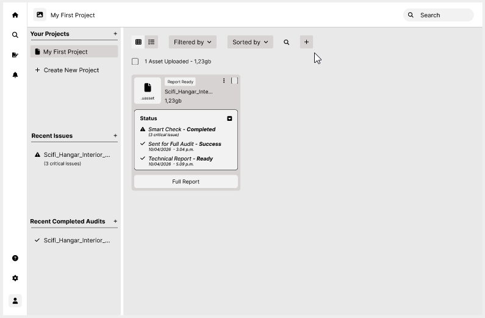
All test participants successfully completed the assigned tasks.
Asset Upload: During initial testing, a usability issue surfaced around asset uploading. The primary button, represented solely by a "+" icon, proved unintuitive and slowed down workflow initiation.
Asset Upload Modal: The upload modal was overly sparse and lacked intermediate feedback. The flow jumped abruptly from idle to uploaded without displaying upload progress. Users expressed a clear need for smoother transitions and immediate visual feedback to monitor progress confidently.
Audit Customization: The most significant friction occurred during audit customization. Users struggled to grasp the real impact of individual options within the modal; without immediate visual feedback (e.g., calculation time, complexity, or priority), they couldn't make informed choices. As a result, users selected all available options indiscriminately, undermining the purpose of customization and system optimization.
Mockups & Prototypes
The first mockup shows the exact layout of the upload action and its dropdown menu. To completely eliminate the hesitation observed during testing, I optimized the component's usability and accessibility: the ambiguous icon was replaced with a solid button containing a clear text label ("Upload Asset"). This intervention removed cognitive barriers, guiding the user's eye toward the primary action upon entering the hub.
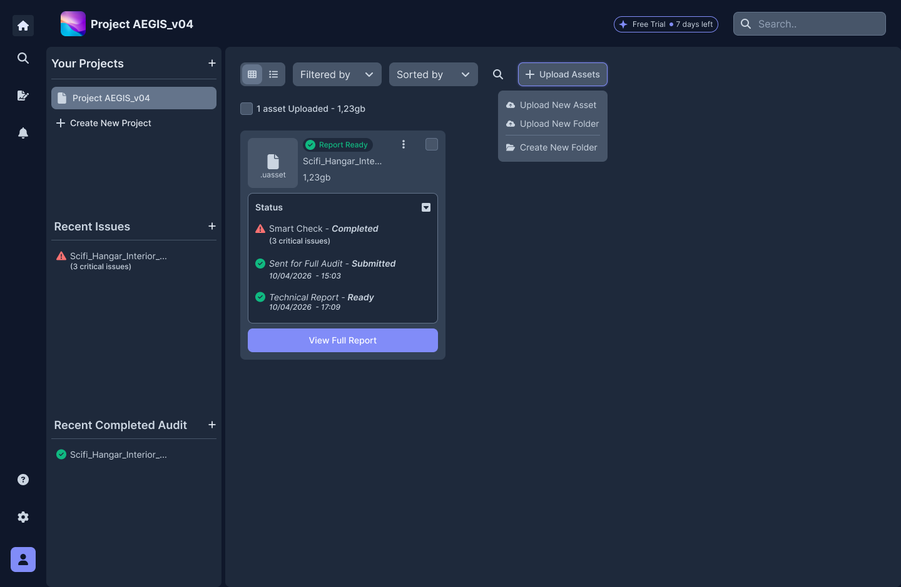
This mockup illustrates the complete redesign of the asset upload modal. To streamline the flow and make it as flexible as possible, I introduced the Drag & Drop pattern while retaining the option to select files directly from the device. The process has been fully automated: as soon as the file is dropped, the system initiates real-time uploading without requiring extra actions or confirmation clicks. Additionally, to ensure maximum accessibility and support during the critical upload phase, I integrated a contextual Help Center directly within the modal.
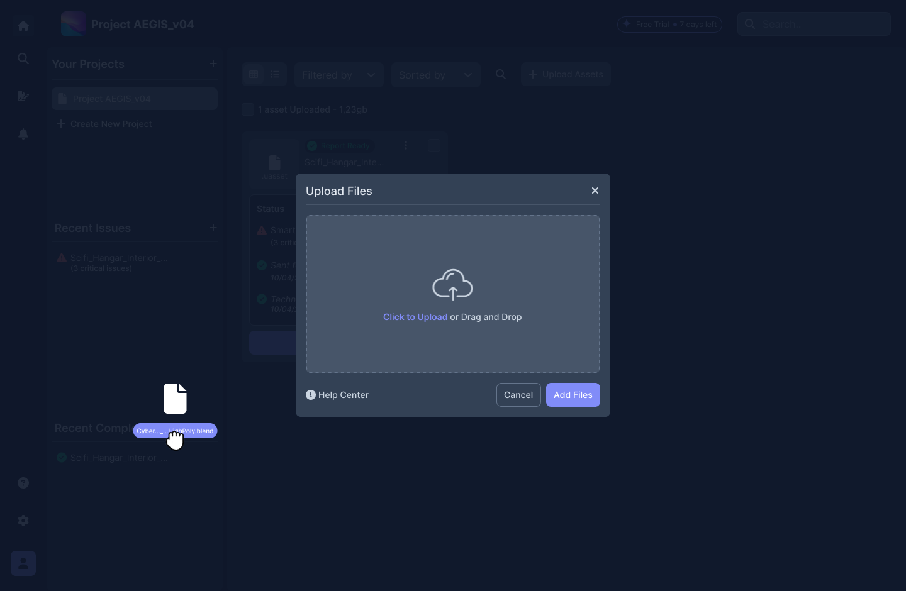
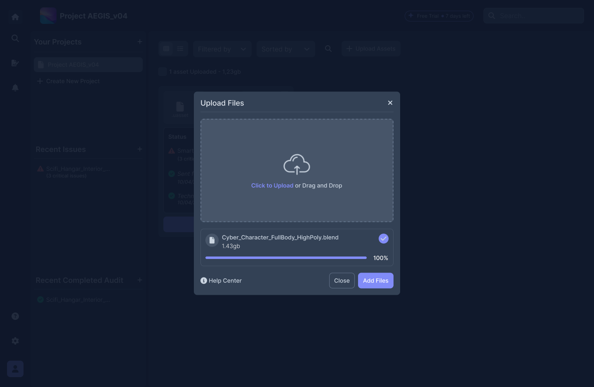
This final mockup demonstrates the design solution to the most critical issue uncovered during testing. After conducting follow-up in-depth user interviews, time emerged as the primary decision-making factor. To address this, I integrated a dynamic, real-time visual feedback system that estimates processing times based on custom options selected within the modal. Making this data transparent allows Jennifer and her team to immediately gauge how each choice impacts project deadlines and release milestones, turning customization into a strategic and transparent decision-making tool.
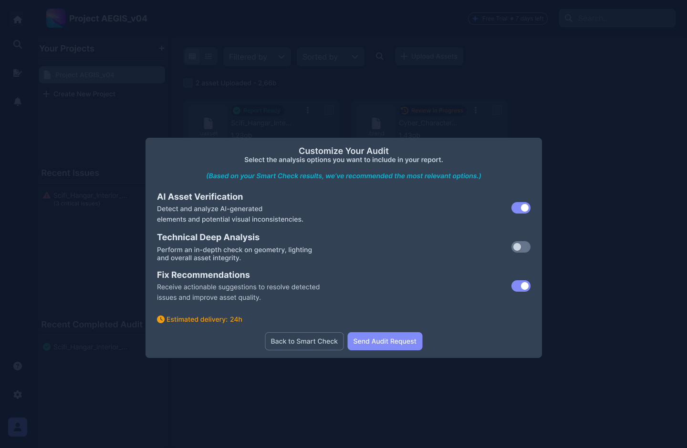
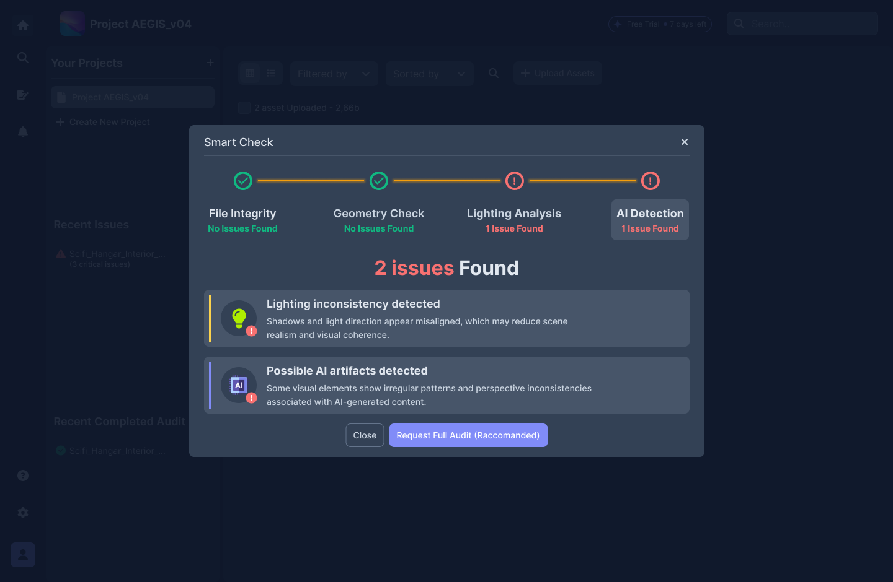
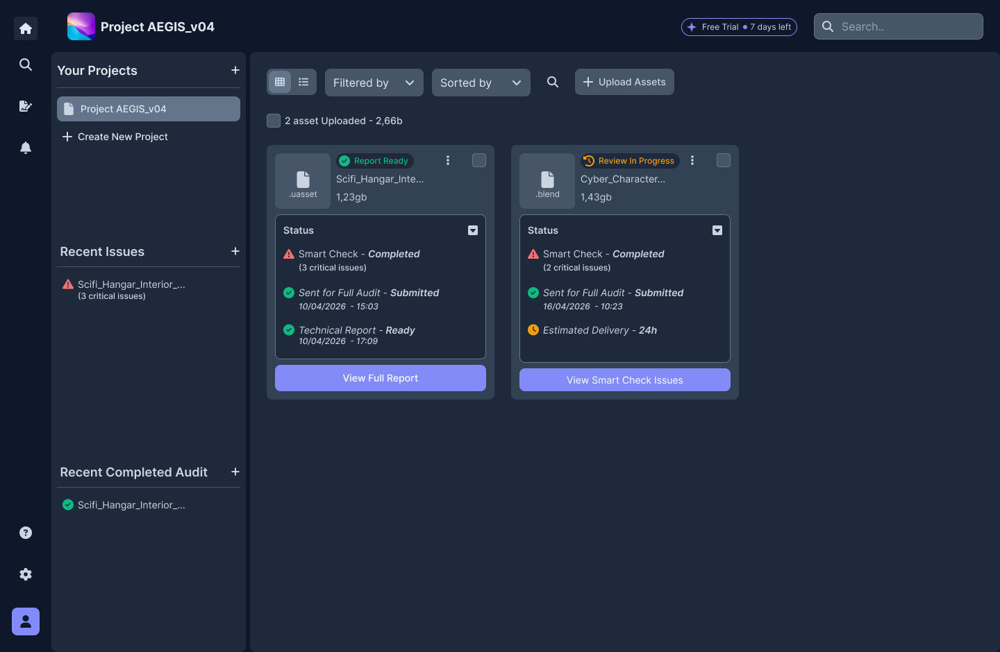
To provide a detailed overview of the final experience, I split the high-fidelity prototype into two distinct, targeted interactive flows. This first prototype focuses on user entry into their workspace and initial file management:
1. The Flow: Demonstrates the linear path where users navigate their workspace and enter a specific project.
2. The Optimization: Highlights the newly designed upload logic. By drastically reducing intermediate steps and providing real-time visual feedback, the process concludes smoothly, immediately displaying the uploaded asset ready for use.
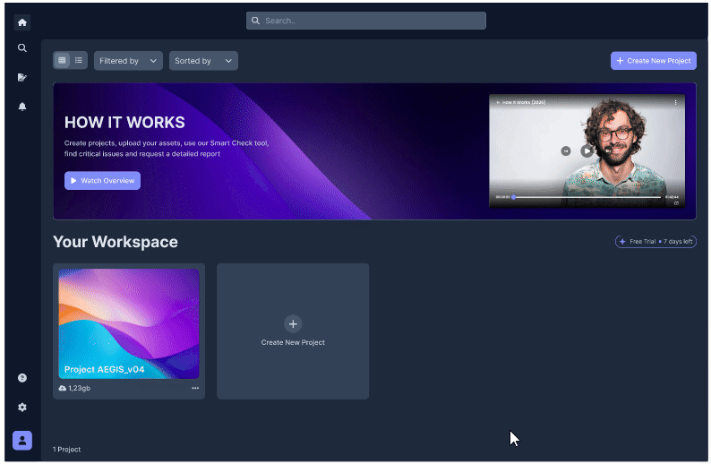
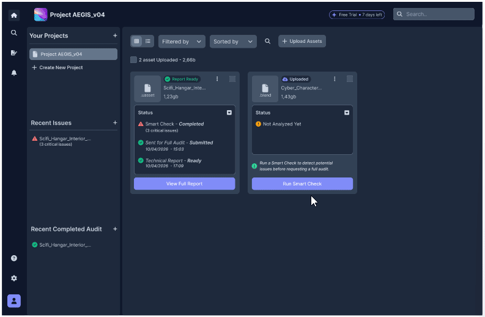
The second interactive prototype focuses on the analytical and decision-making core of the application, illustrating the seamless transition from automated diagnostics to targeted action requests:
1. The Flow: Guides the user through triggering Smart-Check and instantly viewing asset issues (leveraging the familiar mental model of diagnostic scanning systems).
2. Review & Customization: Culminates in opening the audit customization modal. Here, users can interact with configuration options while experiencing real-time dynamic visual feedback that estimates wait and processing times based on selected parameters.
Smoother Workflow: By introducing detailed reports, targeted feedback, and actionable guidance for technical fixes, historic process bottlenecks were completely eliminated. Users no longer deal with abrupt workflow interruptions, unforeseen errors, or structural issues compromising final render quality. The result is a streamlined pipeline and strict adherence to delivery deadlines.
Quality in Execution: By automating the diagnostic stage, the interface relieved users of a tedious operational burden. Teams can now move away from manual, repetitive asset checks, eliminating human error. This saved time translates into the freedom to focus entirely on creative quality, eradicating endless revisions, release stress, and systemic delays at their root.
This project carried a deep significance far beyond pure technical execution. It speaks directly to one of the biggest challenges in tech today: the synergy between automation, AI, and human effort. Mapping, intercepting, and fixing flawed or corrupted assets isn't just about efficiency—it's about protecting and elevating human talent. By liberating professionals from tedious technical errors, we put their true creative and expressive potential back at the center.
What I Would Improve (Next Steps): Looking back, tight time and budget constraints impacted the initial digital wireframing and low-fi prototyping phases. While the macro-structure was fluid, the initial flow was not without usability oversights.
Field testing proved this: while users completed all tasks and valued the concept, they raised valid concerns regarding visual feedback and system transparency. That's where the real lesson lay. Instead of stopping there, I channeled this feedback through rapid iteration and post-test interviews to revamp the high-fidelity UI, surgically resolving every identified pain point. It's proof that great design isn't born perfect—it becomes great by listening to people.